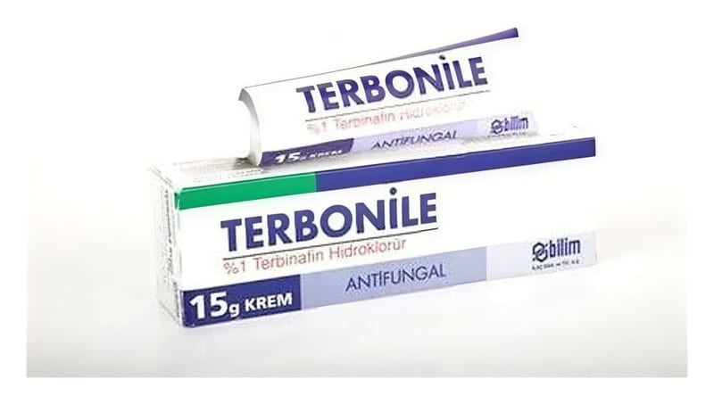

Terbonile %1 15 g Krem

Ne için kullanılır
KT · Bölüm 1TERBONİLE kremin etkin maddesi terbinafin hidroklorürdür. TERBONİLE krem, mantar hastalıklarına karşı etkili bir ilaçtır. TERBONİLE krem de ri sorunlarına yol açan ba zı mantarları öldürerek ya da ür emelerini durdurarak etkili olan bir ilaçtır.
TERBONİLE krem, atlet ayağı hastalığı (Tinea pedis), kasık kaşıntısı (Tinea kruris), saçkıran (Tinea korporis), isilik (Kandidiyazis) ve Pitriyazis versikolor gibi mantar enfeksiyonlarının tedavisinde kullanılır.
Sayfa 2